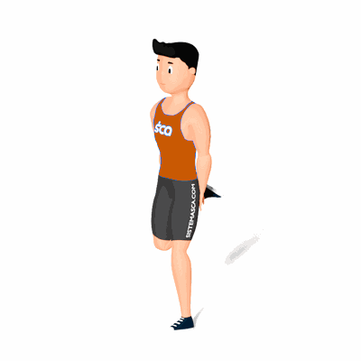

Corrida Estacionária com Calcanhar Atrás

O exercício tem como objetivo a queima de calorias, fortalecer e aquecer os músculos da perna.
Ficha Técnica
Tipo: Aeróbico
Grupo Muscular: Perna
Aparelho: Nenhum
Músculos: Nenhum
Como realizar
- Em pé e com coluna reta;
- Coloque as mãos encostadas nos glúteos e com as palmas voltada para atrás;
- Inicie os movimentos de simulação de corrida no mesmo lugar;
- Flexione os joelhos para atrás, um de cada vez, levando próximo ao glúteo;
- Execute o exercício, conforme o tempo orientado pelo professor(a).
 RC STORE
RC STORE